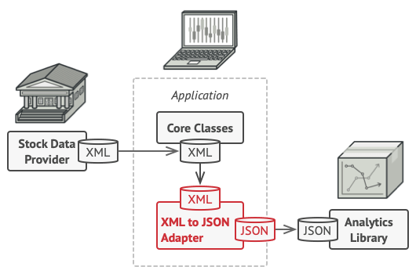
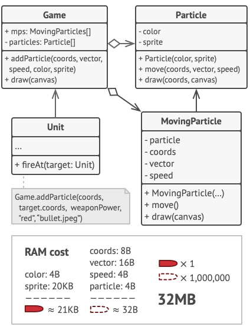
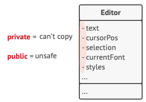

Úvod
Informační technologie
Počítačová grafika
Rastrová a vektorová grafika
Rastrová grafika
vektorová grafika
2D a 3D grafika
2D
3D
Komprese
Grafické formáty
Křivky
Algoritmy, funkce, podmínky a cykly
Algoritmy
Funkce
Podmínky
Cykly
Databáze a databázové systémy (relační – normální formy)
Licence a autorské právo
Licence slouží k umožnění ostatním používat (copyrightem) chráněné autorské dílo.
Krom běžných licencí k softwaru můžeme narazit také na různé dohody k službám.
Jednou ze společností, které se na dnešním znění copyrightu podepsaly nejvíce, je Disney. Více na toto téma je zde.
Autorské právo
Autorské právo (copyright) se liší v podstatě v každé zemi. A to může být jak délkou, po které autorské právo vyprší, tak i zněním.
Chrání pouze konkrétní díla, konkrétní vyjádření myšlenek, nikoli myšlenky či ideje.
Autorské právo k dílu získává autor při jeho vytvoření automaticky. Výjimkou bývá zaměstnanecké dílo, kde obvykle vykonává majetková autorská práva příslušný zaměstnavatel a nikoliv autor díla.
V EU a USA je dílo chráněno po dobu života autora a 70 let po jeho úmrtí, ale například v Kanadě je chráněno po úmrtí jen 50 let.
Spoluautorství (výňatek ze zákona č. 121/2000 § 8)
Právo autorské k dílu přísluší všem spoluautorům společně a nerozdílně.
Spoluautorem není ten, kdo ke vzniku díla přispěl pouze poskytnutím pomoci nebo rady technické, administrativní nebo odborné povahy nebo poskytnutím dokumentačního nebo technického materiálu, anebo kdo pouze dal ke vzniku díla podnět.
O nakládání s dílem spoluautorů rozhodují spoluautoři jednomyslně.
Dohody
V praxi mají EULA a TOS často podobný účel a společnosti mohou mít obě (např. Valve).
SLA licence bývá např. u webhostingů, ale musíte si za ní připlatit.
Hezké shrnutí je zde.
End-user license agreement (EULA)
Stanovuje, co koncový uživatel smí a nesmí.
Je uzavírána mezi poskytovatelem licence (společnost) a držitelem licence na produkt (zákazník).
Většinou také říká, že při zakoupení uživatel získává k softwaru pouze odvolatelnou licenci (tzn. firma se může jednoho dne rozhodnout ji zrušit) a na samotný software nárok nemá (nevlastní ho). Takto funguje například Steam.
Běžně u programů, které běží lokálně.
Produkt může mít licenci EULA a zároveň být open-source (např. Mozilla Firefox).
Terms of use/service (TOS)
Definuje pravidla, jimiž se musí uživatel řídit, aby mohl službu používat. Je uzavírána mezi uživatelem a poskytovatelem služby.
Podobné jako EULA, ale většinou jde o vzdálené služby/SaaS (např. cloudové).
Service-level agreement (SLA)
Placená služba, která uživateli ručí za funkčnost (uptime) nějaké služby a poskytuje náhradu např. při jejím výpadku.
V rámci náhrady je možné smluvit také poskytnutí uživatelské podpory a výši peněžní náhrady.
Licence
Licencovaný software dělíme na svobodný a otevřený (Free and open) a proprietární (Non-free).
Existuje několik typů licencí. Jiné licence používáme pro software a jiné pro umění/data.
pojmy
- libre = svobodný
- free = může být svobodný, ale nemusí. Dva různé způsoby chápání:
- Free as in beer (zdarma)
- Free as in freedom (svoboda)
- open-source = otevřený zdrojový kód
Svobodné a otevřené licence
Podle Richarda Stallmana sem patří tyto čtyři svobody:
- používat program za jakýmkoliv účelem
- studovat, jak program pracuje a možnost přizpůsobit ho svým potřebám
- šířit kopie programu
- vylepšovat program a zveřejňovat zlepšení, aby z nich mohla mít prospěch celá komunita
Mezi klasické svobodné licence patří MIT, Apache 2, Mozilla Public License.
Pro data a umění je možné použít Free Art License a Creative Commons.
Public domain (volná díla)
Díla, u kterých uplynula doba ochrany majetkových práv (copyright).
Dílo můžeme označit za volné i před expirací autorských práv (tzn. napíšeme např. do zápatí, že je volné) nebo použítím Public-domain-equivalent licence (např. CC0 nebo méně známou Unlicense).
Podle naší právní úpravy není možné se autorských práv vzdát, ale je možné nabídnout bezúplatnou licenci.
Copyleft
Od běžných svobodných licencí se liší tím, že odvozené dílo musí využívat stejnou licenci. Toto je možné obejít pouze v případě, pokud máme souhlas všech vlastníků autorskách práv. Příkladem je velice kontroverzní změna z GPLv2 na GPLv3 u Audacity.
Můžete se setkat také s alternativním názvem virální licence.
Nejznámější copyleftové licence pochází od FSF (Free Software Foundation), která vytvořila rodinu GPL (GNU General Public Licence). FSF byla založena již zmiňovaným Richardem Stallmanem.
GPLv2 používá například linuxový kernel.
Proprietární licence
Freeware
Může být užíván kýmkoli k nekomerčním účelům. Uživatel nemá přístup ke zdrojovému kódu.
Výjimkou ovšem je, pokud by software používal nějaké analytické nástroje. V tom případě nemůže být používán dětmi (<13 let COPPA, <13-16 let GDPR) bez souhlasu rodičů.1
Shareware
Podobné jako freeware, ale program navíc obsahuje licenční ujednání.
Používání programu je většinou časově či funkčně omezené.
Komerční software
Program je možné koupit či pronajmout za úplatu.
Často obsahuje licenci EULA.
Soukromý (Privátní) software
Většinou jde o interní software nějaké firmy, který není veřejnosti dostupný.
Běžně je označován jako proprietární, ale může být považován i za svobodný, když jeho jediný uživatel (firma) má k softwaru plná práva. Více informací na toto téma je zde.
COPPA = Children's Online Privacy Protection Act (USA)
Historie ICT a internetu
Kybernetické útoky a hrozby
Kybernetické útoky mají obvykle dva cíle - získat něco (informace, peníze) a nebo cíl poškodit (zničit data, přerušit komunikaci...). Toho lze dosáhnout mnoha způsoby.
Pojmy
- kyberprostor - prostor v rámci počítačové sítě
- kyberkriminalita - trestné činy v kyberprotoru
- hacker - snaží se najít a využít slabých míst v informačních systémech
- white hat (etický hacker)
- slabá místa nahlašuje
- pomáhá s opravením slabých míst
- black hat
- bez oprávnění majitele
- mají zlé úmysly
- gray hat
- mix předcházejících
- nemají zlé úmysly
- nelegální
- díry v systémech nahlašují vlastníkovi
- někdy žádají o menší částku peněz za opravení této díry
- white hat (etický hacker)
Malware
Malwarem může být jakýkoliv škodlivý kód, který má za cíl učinit škodu.
Spyware
Malware určený ke sledování uživatele. Obvykle sleduje aktivitu, stisknuté klávesy a sběr dat. Díky tomu se k útočníkovi mohou dostat vaše hesla nebo cokoliv, co zadáváte do pc. Obvykle také upravuje nastavení bezpečnosti, aby nebyl odhalen.
Do počítače se nejčastěji dostává jako součást legitimního software nebo jako součást trojanu.
Adware
Malware určený k zobrazování reklam. Z toho má pak utočník peněžní zisk, bězně se vyskytuje společně se spyware.
Ransomware
Pojmenován od slova ransom (výkupné). Zašifruje disk počítače a za úplatu jej opět odemkne. Obvykle využívá systémové zranitelnosti pro uzamčení systému, šíří se stažením nebo náhodnou flashkou (např. napadení nemocnic v Benešově a Brně).
Ransomware je velmi efektivní pro velké budovy, protože pokud se dostne do vnitřní sítě, tak se dokáže snadno šířit (pokud síť nění dobře zabepečená).
Pokud řídíte napříkad nemocnici, která je najednou bez počítačů, tak jste poměrně v háji a začnete zvažovat zaplacení výkupného, protože zašifrovaný disk lze jen těžko dešifrovat. Jediná záchrana je obnovit zálohy, nebo najít chybu v samotném viru pomocí reverzního inženýrství (což je ještě težší).
Scareware
Malware, který má za cíl donutit uživatele vykonat akci na bázi strachu.
Spadají sem například reklamy na internetu typu:
„Váš systém je nakažen, klikněte zde pro odstranění problému.“
Po kliknutí se systém nakazí jiným malwarem.
Pro lidi, kteří nejsou poprvé u počítače to není moc velká hrozba, ale pokud jste důchodyně, nebo tak podobně, tak je velká šace, že tento typ útoku bude efektivní.
Bot
Malware určený k automatickému vykonávání určených akcí. Počítači je jinak neškodný, ale při aktivaci může vykonávat jisté online akce.
Obvykle je součástí botnetu (síť několika botů), kde může sloužit například k vykonání DDoS útoku.
Virus
Škodlivý kód, který je obvykle součástí jiné spustitelné aplikace (např. cracknuté hry). Pro spuštění potřebuje akci uživatele.
Viry mohou být neškodné (mohou zobrazovat obrázky nebo cokoliv jiného pro vystrašení - trolling) nebo mohou vážně poškodit OS či smazat data. Viry mohou mutovat, aby se vyhnuly odhalení.
Většina se do pc dostane stažením nelegální kopie sw nebo pomocí přenosného média (CD, Flash disk,...).
Červ
Malware, který se sám replikuje nezávisle na uživateli, využívá zranitelnosti sítě pro šíření. Po nakažení se rychle šíří po síti dál.
Všechny červi mají podobné vzorce chování - povolení zranitelnosti, cestu pro zreplikování a obsahují nějaký payload. Červi jsou zodpovědní za jedny z nejvíce rozšířených útoků. Například Code Red (2001) nakazil za 19h přes 300k serverů.
Rootkit
Malware navržený s cílem vytvořit backdoor1 v systému. Většina rootkitů využívá zranitelnosti
Trojan
malware maskující se za jiný program. Svoje činnosti maskuje za činnosti vyžádané (například instalace aplikace). Využívá jemu přidělených práv, když uživatel spustí jeho kód. Od viru se liší tím, že se váže na nespustitelné soubory.
backdoor = skrytý vstup do systému, například otevřené porty a sw pro vzdálený přístup).
Typy útoků
Social Engineering
Přistupový útok s cílem zmanipulovat uživatele, aby provedl určitou akci. Může jít o sdělení hesla, udělení přístupu, nebo dokonce poskytnutí platebních údajů.
Příklady
-
telefonát zaměstnanci s přístupem do systému
„Jedná se o kritickou situaci, potřebuju heslo...“
-
email od supportu (pretexting) na steamu (proto je v těch chatech nahoře ta notifikace, ať nikomu nedáváte heslo)
„Máme problém s vaším účtem, můžete nám dát přihlašovací údaje, abychom se na to podívali?“
-
fyzický vstup (tailgating), social engineering se vztahuje i na fyzická místa, můžete požádat někoho, ať jde třeba zkontrolovat serverovnu, a budete ho tam sledovat…
-
něco za něco (quid pro quo) - přijde vám mail, že princ Habíbo u vás potřebuje schovat 50 kg diamantů, ale potřebuje peníze na dopravu…
Sociální inženýrství je v dnešní době nejsilnější/nejefektivnější způsob útoků. Většina systémů je dobře zabezpečena a vyžadují velkou dovednost, aby jste se do nich dostali, nicméně využít hlouposti lidí je děsně jednoduché.
Phishing
Druh sociálního inženýrství, jehož principem je odesílání emailu a vydávání se za něhoko jiného. Cílem může být nainstalování software nebo sdílení osobních informací.
Spear phishing
Lepší verze phishingu, která je cílená na konkrétní osobu.
Útok probíhá prvotním zjišťováním informací o určené osobě. Poté útočník využije tyto informace a vytvoří útok specificky pro tuto osobu. Příklad - cíl se zajímá o auta, tak se útočník přidá do stejné FB skupiny a pošle cíli nabídku na prodej auta s odkazem. Odkaz povede na stránku obsahující zavirovaný obrázek, což povede k nakažení cíle.
Baiting
Sociální inženýrství soustředící se na nálákání cíle a vzbuzení jeho zvědavosti.
Nejčastějším případem je zanechání přenosného média někde na veřejném místě. Po zasunutí média do pc je cíl infikován malwarem.
Password cracking (Bruteforce)
Typ útoku, který zkouší každou kombinaci k prolomení hesla. Lze využít třeba k prolomení hesla do šifrovaného souboru, účtu, WiFi. Samotný útok není moc efektivní, trvá dlouho a spoléhá na raw výkon počítače, než na zranitelnost systému.
Útok lze usnadnit využítím seznamu hesel (wordlist). Tyto seznamy lze stáhnout na internetu a obvykle jde o často používaná hesla a odcizená hesla. Nyní nejčetnější seznam se nazývá "RockYou.txt" a obsahuje 32 milionů hesel.
Něco málo k bezpečnosti hesel
K vytvoření účtu potřebujete heslo a to má obvykle nějaké parametry (8 znaků, velké a malé písmeno, čislo a speciální symbol...).
Tyto informace jsou nápomocné ale i hackerovi - ví, co heslo musí obsahovat, aby ho prolomil. Nejbezpečnější je stanovit větší minimální délku (například 16 znaků), protože tak by bruteforce trval moc dlouho.
Dále se dělá, že hesla nesmí obsahovat slova a při zadávání hesla je heslo ověřováno se slovníkem. To také ale není bezpečné, protože uživatelé si to heslo pak nebudou pamatovat, takže si ho někam napíší (papírek, který si přilepí na monitor). Proto je opět nejbezpečnější mít dlouhé, ale ne moc složité heslo, než mít super silné heslo, ale mít ho napsané na papíře u monitoru.
Exploiting
Využívání zranitelností je jedna z nejčastějších metod útoků. Spoléhá na nalezení chyby (v kódu OS, specifické aplikace či protokolu).
Ke zranitelnosti se útočník dostane oskenováním cílového počítače a zjištěním co nejvíce informací (os a jeho verze, běžící služby a jejich verze, otevřené porty).
Po zjistění relevantních informací útočník vyhledá, zda pro ně už neexistuje nějaký exploit (viz https://www.exploit-db.com/). Pokud ano, tak ho útočník využije a dostane se třeba ke vzdálenému přístupu.
Příklady
-
hack herních konzolí - po nalezení chyby v os je možné instalovat vlastní SW
-
intel meltdown - Hardware zranitelnost Intel procesorů. Jde o race condition (popsáno pozdeji) mezi zadáváním instrukcí a ověřením práv.
-
shellshock - Exploit v unixu, jde o neautorizované spouštění příkazů v BASH. Pokud byl kód přidán na konec proměnné, tak byl vykonán a to už bez ověření práv. Je to jedna z nejznámějších bezpečnostích chyb. Objevena byla v roce 2014, ale v systému byla již od roku 1992.
Denial of service (DoS)
Druh síťového útoku. Jde o flood útok, kdy útočník z jednoho počítače odesílá velký počet bezúčelných paketů.
Cílem útoku je znemožnit přístup k určité službě a tím zamezit jejímu použití (ztráta peněz cílové společnosti).
DoS útoky jsou snadné na provedení a proto představují velký risk.
Typy
-
kvantita - Cíl zahlcen tolika požadavky, že nezvládne zpracovat další.
-
špatně formátovaný paket - Paket je formátován tak, že jej cíl nedokáže zpracovat (obsahuje chyby). Cílové zařízení je proto zmatené a může crashnout.
Distributed DoS (DDoS)
Zjednodušeně jde o koordinovaný DoS z více zdrojů. Obvykle je proveden pomocí botnetu složeného ze "zombie počítačů" (nakažené pc bot malwarem, takže vykonávají akce útočníka).
Man-in-the-middle (MITM)
Útok, během kterého útočník naruší komunikaci svým zařízením a odposlouchává/upravuje komunikaci. Lze mu snadno předejít šifrováním komunikace. Pokud ale útočník zachytí výměnu klíčů, tak je komunikace prozrazena.
nejčastější druhy:
-
ARP poisoning - utočník se v sítí bude vydávat za router, tudíž přesměruje celou komunikaci přes něj
-
DNS spoofing - otrávení DNS tabulky, takže pak bude přesměrovávat na chybnou adresu, obvykle útočníkovu
SQL injection
Jedna z nejčastěji používaných technik útoku na web. Upravení SQL dotazu na webu tak, aby vracel například všechny záznamy (leak celé DB). Toho lze docílit přidáním vždy správné podmínky (... OR 1 = 1). To vrátí vše z tabulky.
SEO poisoning/Spamdexing
Útočník může uměle zlepšit vyhledávací skóre podvodné stránky obsahující malware, aby byla častěji zobrazována. Více navštěv = více lidí, kteří se mohou nakazit.
Útočné strategie
Blended attack
Kombinace několika útoků najednou, je potřebný pro více komplexní útoky. Používá se prakticky všude.
příklady:
- kombinace spam emailů a odkazu na malware
- bot malware vede k botnetu a to vede na DDoS, DDoS shodí web banky a pak útočník rozešle phishing maily omlouvající se za nepříjemnost a přesměruje je na fake login page
Kill chain
Struktura útoku. Obsahuje části obvykle potřebné pro správné provedení útoku.
Útok
-
Reconnaissance (výběr cíle, průzkum, hledání zranitelností)
-
Weaponization (vytvoření útoku, malwaru...)
-
Delivery (odeslání útoku k cíli)
-
Exploitation (spuštění útoku)
-
Instalation (instalalce vzdáleného přístupu na cílové zařízení)
-
Command and Control (získání přímého přístupu do systému)
-
Actions on objective (zisk dat nebo provedení škodlivé akce)
Obrana
-
Detect (detekovat útok a útočníka)
-
Deny (zamezit vzdálenému přístupu)
-
Disrupt (zastavit odchozí traffic)
-
Degrade (protiútok Command and Control)
-
Decieve (zásah do útočníkova Command and Control)
-
Contain (opravit chybu/zranitelnost)
Procesory
Historie procesorů
Parametry procesorů
Architektury procesorů
Architektury počítačů
Von Neumannovo schéma
Harvardská architektura
Základní desky, BIOS a EFI
Základní desky
BIOS a EFI
Zdroje a záložní zdroje
Zdroje
Záložní zdroje
Off-line
Line-interactive
On-line
Chlazení a počítačové skříně
Chlazení
Počítačové skříně
Paměti počítačů
Volatilita
ROM a RAM
Virtuální paměť
Grafické karty
Zobrazovací zařízení
Paměťová média
Síťové modely
Internet, domény a služby
Internet
Domény
Služby
Webhosting
Internetworking (pasivní a aktivní prvky sítí)
Pasivní prvky sítí
Aktivní prvky sítí
Webové technologie a stránky
Programovací a skriptovací jazyky
Redakční systémy
Cloud a E-goverment
Cloud
E-government
Vývoj aplikací
Programovací jazyky a zpracování zdrojového kódu
High-level a low-level jazyky
Interpreter
Kompilátor
Datové struktury
Každá data jsou reprezentována datovými typy. Ty můžeme také skládat do struktur (třídy,..).
Každá datová struktura má své operace, které mají svojí časovou náročnost (Big O notation).
Array
- data jsou poskládány za sebou v paměti
Pamět ╭───┬───┬───┬───┬───┬───┬───┬───┬───╮ │ 1 │ 2 │ 3 │ 4 │ 5 │ 6 │ 7 │ 8 │ 9 │ ╰───┴───┴───┴───┴───┴───┴───┴───┴───╯ - dělí se na statické a dynamické
- statické mají pevně dannou velikost
- dynamické mají proměnlivý počet prvků
Queue
- je to dynamický array
- vkládá se do něho na principu FIFO (First In, First Out)
=> ╭───┬───┬───┬───┬───┬───┬───┬───┬───╮ │ 9 │ 8 │ 7 │ 6 │ 5 │ 4 │ 3 │ 2 │ 1 │ ╰───┴───┴───┴───┴───┴───┴───┴───┴───╯ ^ - IN ^ - OUT
Stack
- je to dynamický array
- vkládá se do něho na principu LIFO (Last In, First Out)
╭───╮ │ 6 │ < - IN/OUT ├───┤ │ 5 │ ├───┤ │ 4 │ ├───┤ │ 3 │ ├───┤ │ 2 │ ├───┤ │ 1 │ ╰───╯
Linked List
- je to dat. struk., která má předem neznámou délku
- tato struktura se skládá z uzlů (Nodes)
- uzel vždy má hodnotu a adresu další hodnoty

- první uzel se nazývá Head a poslední Tail
- uzel vždy má hodnotu a adresu další hodnoty
- lze vkládat 3 způsoby
- před Head
- nejjednodušší
- vytvoříme uzel, který bude ukazovat na Head
- za Tail
- vytvoříme uzel, na který bude ukazovat Tail
- mezi 2 uzly
- nejsložitější
- postup
- vytvoříme uzel, který bude ukazovat na určitý uzel (A)
- uzel který je před uzlem (A), tak bude muset nyní ukazovat na náš nový uzel

- před Head
- dělí se
- single linked list (jednosměrně spojový seznam)
- uzel ukazuje na další uzel
- doubly linked list (obousměrně spojový seznam)
- uzel ukazuje na další i předchozí uzel
- circular linked list (kruhový spojový seznam)
- poslední uzel ukazuje na první uzel

- poslední uzel ukazuje na první uzel
- single linked list (jednosměrně spojový seznam)
Tree (Strom)
- slouží k uchování hierarchicky uspořádaných dat (např. složky a soubory)
- každý strom má Root (kořen), což je uzel
- každý uzel může mít větve na kterých jsou další uzly, pokud uzel nemá žádné větve, tak se nazývá list (Leaf)
- uzel, který není Root ani Leaf se nazívá internal Node (vnitřní uzel)
- existuje mnoho typů stromů
- binární strom (uzel má vždy nejvíc 2 uzly)
- binární vyhledávací strom (stejné jako bin. strom, ale levý uzel má vždy menší hodnotu než pravý)
- můžeme u nich měřit jejich hloubku (kolik uzlů je mezi Root a nejvzdálenějším Leaf)
Velikost tohoto stromu je 3 (A -> C -> E je nejdelší cesta k Leaf)
A
╱ ╲
B C
╱ ╲
D E
Graph (Graf)
- je složen z uzlů (node, vertex), hran (edge, spojuje uzly) a jejich vzájemných incidencí (adjacency)
- 2 typy
- neorientovaný graf - hrany nerozlišují směr
- orientovaný graf - hrany mají určen směr od počátečního do koncového uzlu

Hash table
- používá se k sestavování asociativních polí, které za pomoci klíče (key) a správné hashovací funkce (hash function) umožňují indexování
- jde o metodu, která řádově snižuje asymptotickou složitost vyhledávání až na logaritmickou úroveň
- indexování je hojně používáno například v databázích, kde urychluje vyhledávání

Použití
| Název | Využití |
|---|---|
| Array | kontakty v mobilu, vytváření blok prvku pro ostatní dat. struk. |
| Stack | undo a redo |
| Queue | task scheduling, call center, vyvolávání lístků s pořadím |
| Linked list | undo a redo, předcházení kolizí v hash map |
| Tree | file system |
| Graph | nejkratší možná vzdálenost z bodu A do bodu B |
Náročnost operací

Databáze a SQL
Databáze
SQL
OOP
Abstrakce
Dědění
Polymorfismus
Návrhové vzory
Co to je?
Způsoby postupu pro efektivnější/jednodušší řešení některých typů problémů při vývoji softwaru. V podstatě to jsou ověřené programovací styly a postupy.
Bývají často zaměňovány s algoritmy, protože oba koncepty popisují řešení specifického problému. Liší se však v tom, že algoritmy jsou jako kuchařka (pevně dané postupy), zatímco vzory jsou jako plán (vidíme výsledek a funkce, ale přesné pořadí záleží na nás).
Některé návrhové vzory jsou jednoduché a standardní postupy, jen je někdo sepsal, určil pravidla a dal jim název.
Proč?
Problémy můžeme díky těmto postupům řešit správně.
Tím, že jsou tyto postupy známé, je mnohem snažší pro jiného člověka se v kódu lépe zorientovat. Můžeme také s kolegy komunikovat konkrétněji (např. "Tak na to použij Singleton.").
Z čeho se skládají?
- vzory jsou popsány velice formálně
- skládají se z
- Záměru (nastínění problému i řešení)
- Motivace (podrobnější vysvětlení problému i řešení)
- Struktury (vztahy mezi třídami)
- Většínou i s ukázkou vzorového kódu
Dělení
- Creational patterns (vytvářecí)
- jak jsou objekty vytvářeny
- Structural patterns (strukturální)
- jaké mají objekty mezi sebou vztahy
- Behavioral patterns (chování)
- jak objekty spolu komunikují
Zdroj
Creational patterns
Singleton
Objekt, který může být instancován pouze jednou. Použijeme například u připojení k databázi nebo nastavení aplikace.
class Singleton
{
private static $instance = NULL;
protected function __construct() { }
public static function getInstance() : Singleton
{
if (self::$instance === NULL)
{
self::$instance = new static();
}
return self::$instance;
}
}
Builder
Objekt se vytváří postupně a ne najednou.
class Burger
{
private $_bun;
private $_ketchup;
private $_salad;
private $_meat;
public function __construct(
boolean $bun = false,
boolean $ketchup = false,
boolean $salad = false,
boolean $meat = false)
{
$this->_bun = $bun;
$this->_ketchup = $ketchup;
$this->_salad = $salad;
$this->_meat = $meat;
}
public function addBun() { $this->_bun = true; return $this; }
public function addKetchup() { $this->_ketchup = true; return $this; }
public function addSalad() { $this->_salad = true; return $this; }
public function addMeat() { $this->_meat = true; return $this; }
}
// najednou (klasický způsob)
$burgerA = new Burger(true, false, true, true);
// postupně (použití builder patternu); $burgerA === $burgerB
$burgerB = new Burger()->addBun()->addSalad()->addMeat();
Prototype
Alternativa k dědění tříd. Rozdílem je, že dědíme přímo z objektu, a to i s jeho hodnotami.
const zombie = {
eatBrains() {
return "Yum 🧠";
},
};
zombie.eatBrains();
// Prototype
const zombieWithName = Object.create(zombie, { name: "Igor" });
zombieWithName.eatBrains();
zombieWithName.name;
Structural patterns
Proxy
Zástupný objekt za originální objekt. Vykonává akce předtím, než se požadavek dostane k původnímu objektu nebo poté, co se k němu dostane.
interface Subject
{
public function request(): void;
}
// Objekt
class RealSubject implements Subject
{
public function request(): void
{
echo "RealSubject: Handling request.\n";
}
}
// Proxy
class Proxy implements Subject
{
private $realSubject;
public function __construct(RealSubject $realSubject)
{
$this->realSubject = $realSubject;
}
public function request(): void
{
if ($this->checkAccess()) {
$this->realSubject->request();
$this->logAccess();
}
}
// Akce před
private function checkAccess(): bool
{
echo "Proxy: Checking access prior to firing a real request.\n";
return true;
}
// Akce po
private function logAccess(): void
{
echo "Proxy: Logging the time of request.\n";
}
}
function clientCode(Subject $subject)
{
// ...
$subject->request();
// ...
}
$realSubject = new RealSubject();
clientCode($realSubject);
// vs
$proxy = new Proxy(new RealSubject());
clientCode($proxy);
Adapter
Funguje jako takové lepidlo mezi třídami, které mezi sebou nejsou kompatibilní. Výhodou je, že nemusíme modifikovat kód existující třídy.
V podstatě stejný princip jako u adaptéru např. z HDMI na USB C.

Flyweight
Optimálnější využití RAM díky sdílení částí dat mezi vícero objekty místo nechání všech dat v každém objektu.
Původní návrh:

Zoptimalizovaný kód s pomocí vzoru flyweight. Sdílíme instanci třídy Particle:

Behavioral patterns
Memento
Umožňuje nám vrátit (undo) předchozí stav i bez přístupu k implementaci objektu. V podstatě je to takový snapshot.
Příkladem může být undo v editoru.
Problém:

Řešení:

Observer
Umožňuje informovat objekty, které chtějí být informovány (subscribed), o provedení nějaké akce.
Tento pattern můžeme znát také pod názvy Event-Subscriber nebo Listener.
Problém:
- čekání na nový produkt
- buď posíláme informaci nikomu nebo všem zákazníkům

Řešení:
- vytvoření objektu, který bude obsahovat všechny odběratele

Chain of Responsibility
Umožňuje předávat požadavky řetězci zpracovatelů (handlers). Zpracovatel musí buď požadavek zpracovat nebo poslat dalšímu zpracovateli.

Problém:
- vyřešení požadavku na objednávací systém

Řešení:
- vytvoření řetězce zpracovatelů

UML
- jednotný jazyk pro tvorbu diagramů
- definuje standardy pro jednotnou tvorbu diagramů
- umožňuje
- specifikace
- struktura
- model
- vizualizaci
- grafy
- konstrukci
- class diagram
- dokumentaci artefaktů
- specifikace
- každý diagram se používá v jiné fázi vývoje SW
- dělení
- funkční náhled
- use-case dia.
- logický náhled
- class dia.
- objektový dia.
- dynamický náhled popisující chování
- stavový dia.
- dia. aktivit
- sekvenční dia.
- implementační náhled
- dia. komponent
- dia. nasazení
- funkční náhled
Class diagram
- poskytuje logic. náhled na systém
- znázorňuje
- datové struktury
- operace u objektů
- vazby objektů
- 1
- 0..1
- 0..n
- 1..n
- využívá se při návrhu implementace
Objektový diagram
- zobrazuje instanci tříd
- je to snímek objektů a jejich vztahů v určitém čase
Use-case diagram
- poskytuje funkční náhled systému
- kdo se systémem pracuje a jak
- využívá se ve fázi specifikace požadavků
Stavový diagram
- zobrazuje životní cyklus objektů a stavy do kterých se během svého života dostávají
- obsahuje 3 základní prvky
- stav
- událost
- přechod
- využívá se při návrhu implementace
Diagram aktivit
- grafické znázornění algoritmů
Sekvenční diagram
- znázorňuje komunikaci mezi objekty v čase
- používá se ve vývojové fázi specifikace požadavků a návrhu implementace
Diagram komponent
- ilustruje organizaci a závislosti mezi softwarovými komponentami
Diagram nasazení
- konfigurace technických prostředků a rozmístění implementovaných softwarových komponent na jednotlivé technické prostředky reprezentované v počítači
Techniky sdílení zdrojového kódu
Verzovací systémy
Git
Mercurial
Subversion
Metodiky vývoje software
Vodopád
Spirála
Rapid application development
Inkrementální (přírůstkový) vývoj
Agilní
SCRUM
Kanban
Algoritmy řazení
Formáty pro výměnu dat (XML, JSON, CSV)
Návrh grafického rozhraní a práce s uživatelem
Gamedesign a herní enginy
Gamedesign
Platformy
Nejčastějšími platformami, pro které se vyvýjí hry, jsou PC, konzole, web a mobilní zařízení. Setkat se můžeme také s relativními nováčky VR a AR.
Zvuk/hudba
Zvukovou složku her musíme rozdělit na dvě kategorie: herní zvuky a herní hudbu. Zatímco první kategorie spadá spíše do kompetence herních designérů, druhá je v posledních letech čím dál častěji obsazována profesionálními skladateli.
Zahušťuje prostředí hry, je komplementární složkou akce a vytváří dojem reálného prostoru. Diegeticky použitá hudba napomáhá zpřesňování významu příběhu, motivuje hráče (zvyšování tempa, intenzity, hustoty zvukových událostí), reflektuje a upravuje psychický stav hráče (zesiluje emoce apod.).
Další funkce zvukové složky jsou: podílí se na konstrukci prostředí hry, akcentuje pohyb hráče ve hře, slouží narativní linii hry (návaznost, jednota, informace, předjímání atd.). Dále pomáhá ukotvit hráče ve hře, do jisté míry kóduje emoce, symbolizuje konkrétní události nebo věci, simuluje systém odměn a trestů.
Další funkcí herní hudby je marketing. Účelem je buď podpořit prodej herního soundtracku, nebo přilákat milovníky hudby ke konkrétní hře.
Historie
Early video game music was once limited to sounds of early sound chips, such as programmable sound generator (PSG) or FM synthesis chips. These limitations have led to the style of music known as chiptune, and became the sound of the first video games.
Co udělat před vývojem
Před vývojem si musíme klást tyto otázky:
- Bude hra single nebo multiplayer?
- Co je cílem hry?
- dokončení příběhu, misí, achievementů
- předehnat ostatní - kompetitivnost
- "bez cíle" - Minecraft
- Kdo je cílovou skupinou?
- Bude hra 2D, 2.5D nebo 3D?
- Z jakého pohledu se bude hráč dívat? (1. nebo 3. osoba)
- Jak bude hra stylizovaná? (cartoon, low-poly, pixel, realisticky,..)
Příklady žánrů a her
Herních žánrů je spousta a často se prolínají, proto je zde jen nezbytné minimum.
-
RPG (Role-playing games) - The Witcher
-
FPS (First-person shooter) - CS:GO
-
karetní - The Spire, Solitaire
-
logické - The Witness, Portal
-
strategie - XCOM, Civilizace
-
simulátory - Eurotruck simulator, Farming simulator
-
závodní - Forza Horizon 5, Need for Speed
-
Adventury - Samorost, Machinarium, Polda
-
plošinovky - Mario, Sonic
Povolání
Herní designér navrhuje, z čeho se hra skládá a jak se hraje. Plánuje a definuje tyto prvky hry:
- nastavení
- strukturu
- pravidla
- příběh
- postavy
- speciální předměty, rekvizity, vozidla a zařízení
- způsoby hry
Game artist pracuje na hře po grafické stránce (vytváří assety) a vývojář hru programuje.
Herní enginy
Herní enginy usnadňují vývoj her, protože poskytují znovu použitelné komponenty a užitečné různé nástroje. Umožňují vyvíjet hry i neprogramátorům, protože mají hodně funkcí v grafické podobě (GUI).
U většiny enginů jsou zabudované tyto základní funkce:
- rendering
- načítání
- animace
- scény
- fyzika a detekce kolizí mezi objekty
- vstupy
- zvuk
- AI
Grafické API
Vše co vidíme na obrazovce je vykreslováno za pomocí různých grafických API.
Výběr grafického API může výrazně ovlivnit i výkon naší hry.
Mezi ty nejznámější se řadí DirectX (pro Windows), OpenGL (multiplatformní), Metal (pro Apple zařízení) a Vulkan (multiplatformní, náhrada za OpenGL).
Programovací jazyky
Většinou se pro vývoj her používá C++, protože programátor má větší kontrolu nad optimalizací.
Můžeme se ale setkat také s C# (Unity) nebo JS (webové hry).
Pro jednoduché skriptování se často používá Lua.
Zdroje
https://en.wikipedia.org/wiki/Video_game_music https://is.muni.cz/el/1421/jaro2014/KA1_18/um/B.pdf
Unity
Engine Unity je vyvíjený společností Unity Technologies a byl poprvé představen v roce 2005.
Unity od verze 5 (2015) podporuje pouze C#.
Využívá se jak pro menší indie studia, tak i pro vývoj větších her.
Nabízí se ve více edicích:
- Personal: zdarma
- Plus: $40 měsíčně (zisk > $100 000)
- Pro/Enterprise: $150/$200 měsíčně (zisk > 200000 USD)
Hlavními výhodami jsou:
- dokumentace
- podpora vícero platforem
- jednoduché pro začátečníky
Příklady her
- Falls Guys
- Escape From Tarkov (realistické FPS)
- Cities Skylines (city builder)
- Beat Saber (Facebook VR hra)
- Firewatch (walking simulator)
Unreal Engine
Jedná se o přímého konkurenta pro Unity, je ovšem složitější. Unreal vydalo Epic Games již v roce 1998.
Nejnovější je verze 5, která byla vydaná v roce 2022.
Programovat můžete buď v jazyce C++ nebo vizuálního s pomocí Blueprints. Ve vizuálním skriptování stačí vybrat správné bloky a ty mezi sebou propojit.
Cena se odvíjí od prodejů hry. V základu je licence zdarma, ale pokud hra vydělává více než $3,000 za čtvrtletí, vývojář musí Epicu zaplatit 5% z hrubého výnosu za dané čtvrtletí.
Hlavními výhodami jsou:
- modifikovatelnost
- komplexnost
Do nevýhod patří:
- složitost
- velikost
- náročný na požadavky
Příklady her
- BioShock
- Back 4 Blood (nástupce Left 4 Dead)
- Mass Effect 3
- Fortnite (bude přecházet na verzi 5)
- Friday the 13th: The Game (pomocí systému Blueprints)
Připravované
- Witcher 4
- Přechod z Red enginu, kvůli odchodu pracovníků, kteří v něm mají praxi
- Stalker 2
Godot
Godot byl vydán roku 2014. Je to open-source (MIT licencovaný) engine, který je vyvíjený komunitou.
Používá se převážně pro vývoj 2D indie her.
Oficiálně podporuje C#, C++, C, GDScript (upravený Python) a VisualScript.
Hlavními výhodami jsou:
- vizuální editor
- systém scény
- uživatelsky přívětivé prostředí
- velikost
Do nevýhod patří:
- 2D fyzika
- výkon v 3D
Příklady her
V Godotu zatím nejsou napsané žádné velké hry.
Frostbite
Frostbite vyvíjí společnost Dice. Byl vydán v roce 2008 a nyní má už 3. verzi.
Je známý pro vlastnost kvalitních destrukcí na herních mapách (budovy, vozidla).
Je multiplatformní, podporuje PS, Windows, Switch, Stadia a Xbox. Je v něm možné programovat pomocí C++ a C#.
Příklady her
- Battlefield
- FIFA
Webdesign
Webdesign je obor zabývající se návrhem uživatelského rozhraní (UI) a vzhledu webových stránek/aplikací. Jeho cílem je vytvořit návrh webu, který na uživatele zapůsobí předem stanoveným způsobem.
S webdesingem úzce souvisí SEO, marketing a copywriting (psaní reklamních a marketingových textů).
Webdesing definuje:
- vizuální prvky
- použité technologie
- obsah
- výkon
- účel webu či aplikace
Úkolem webdesignera je seskládat elementy a jejich atributy tak, aby stránky bylo jednoduché používat a aby udržely pozornost uživatele. Po dokončení koncepce webu začínájí pracovat vývojáři.
Proč?
"...obal prodává a první dojem můžeme udělat jenom jeden."
Zásady správného webdesignu
Mezi hlavní zásady patří přístupnost (accessibility), která je důležitá pro čtečky a postižené lidi. Dále je důležitá informační struktura (Kde by to uživatel hledal?) a intuitivnost (Jak bude zákazník web ovládat?).
Web by měl být graficky jednotný a webdesigner by se měl řídit pomocí základních stylistických a typografických pravidel, například těchto:
- vyvážení a symetrie - každý prvek má svou váhu
- opakování - sjednocuje a posiluje design
- kontrast - prvky vystupují z celkového designu stránky a upoutají uživatelovu pozornost
Důležitá je však i psychologie:
- emocionální propojení - využití emocí u návštěvníků
- příjemnost - web zanechá u zákazníka kladný pocit, takže se vrátí
- důvěryhodnost - důležité například u bank a eshopů
Web by se měl na všech zařízeních lehce ovládat. Volíme dostatečnou velikost fontu, barvu, kontrast.
Důležité informace by měly být uživateli zřetelné na první pohled. Viditelnou část webu po příchodu uvidí 100% uživatelů. Nižší části webu jen 60-20%.
Webdesigner by si měl dát pozor na rušivé pozadí webu (např. postranní reklamy na CZC), nejednoznačnou hierarchii, špatně čitelné texty a nevýrazné výzvy k akci.
Co je cílem webdesignu?
Hlavním cílem firemní webové stránky není zaujmout krásným designem, ale přivést zákazníky. Design je sice subjektivní a neměřitelný, ale návštěvnost, strávený čas na webu a prokliky změřit můžeme.
Návštěvník by měl na webu jednoduše zjistit tyto informace:
- O čem web je? (stručnost je občas lepší jak originalita)
- Co tam mohu dělat?
- Proč to mám dělat? (Proč jsme lepší než konkurence?)
- Kde najdu informace? (kontakt, obchodní podmínky, ...)
Průběh tvorby stránek
-
krok – strategie webu, návrh řešení
- Nejdříve se konzultuje strategii webové prezentace.
- Návrh řešení obsahuje návrh provozu webu a harmonogramu vývoje
-
krok – architektura, struktura webu, webdesign
- vytvoříme architekturu nového webu, která je pak jednoznačným zadáním pro tvorbu prezentace.
- Na základě zadání se předloží grafický návrh.
-
krok – šablona, HTML, implementace redakčního systému
- Poté se vytvoří validní šablona webu a naprogramujeme vše potřebné k jeho správnému fungování
-
krok – obsah, SEO, optimalizace
- Následně se řeší optimalizace obsahu pro vyhledávače
-
krok – provoz, hosting
- Hotový web se nasadí na hosting a zajistí se jeho funkční provoz.
Technologie a nástroje pro webdesing
Existuje vícero typů nástrojů pro webdesign. Každý má své pro a proti a záleží na tom, co od něj očekáváme. Některé nejpoužívanější:
- Figma, InVision (cloud)
- Sketch, Adobe XD (desktop)
UX a UI
User Experience (UX)
Na první pohled neviditelný. Návrh produktu/služby tak, aby splnil uživatelovy požadavky. Je zaměřen na uživatele, jejich potřeby a cíle. Netýká se jen webů a aplikací.
User Interface (UI)
Na první pohled viditelný. Návrh prvků, celku, animací a interakcí tak, aby uživatele vizuálně provedl a naplnil tak UX. Je zaměřen na uživatele, jejich potřeby a cíle. Týká se pouze webů a aplikací.
SEO (Search Engine Optimization)
SEO hodnocení ovlivňuje pořadí výsledků ve vyhledávání.
Vyhledávací enginy (Google, Bing,..) záměrně nezveřejňují svůj algoritmus pro ranking.
Některé metriky webu je možné otestovat pomocí technologie Lighthouse v Chromium-based prohlížečích (CTRL + I -> Lighthouse) a nebo rovnou na této stránce od Googlu.
V českém prostředí se setkáte také s termínem „optimalizace pro vyhledávače”.
Doména
V rámci SEO se hodnotí i délka doménového jména, použité TLD (.com, .org, .eu, .cz) a také SSL certifikáty (zabezpečená komunikace).
Čím je na náš web více odkazováno (backlink), tím lépe boduje v pravdivosti. Záleží však také na skóre stránek, které na naši stránku odkazují.
Do rankingu nalezených stránek se promítá také četnost klíčových slov na stránce a jejich shoda s hledaným výrazem. Toto je součástí tzv. SERP (Search Engine Results Pages).
Stránka
Stejně jako u domény se zde počítá skóre backlinků a relevance klíčových slov u vyhledávání, ale tentokrát na úrovni jednotlivých stránek (např. článků).
Dále se zde hodnotí délka obsahu, čitelnost a načítací rychlost (obrázky, skripty,..).
Součástí indexu je také popularita, která souvisí s počtem kliknutí na stránku - clickstream data (data o klikání), CTR (Clickthrough rate - prokliknutí).
Typy zobrazení
Fixní design
Web je tvořen pro jedno rozlišení. Dříve se takhle dělala většina webů (nejčastěji 980px). Pokud zobrazíme takový web na mobilu, bude vypadat stejně jako na počítači.
Protože design není responsivní, jste nuceni nazoomovat na část, kterou si chcete přečíst a poté v tomto zvětšeném režimu na stránce hledat další informace. Některé stránky nabízí fixní mobilní zobrazení na "m.domena" (např. YouTube - m.youtube.com).
Fluid (plovoucí) design
Šířka webu se udává relativně (s pomocí CSS Grid layoutů nebo v procentech, rem, vw,..). Dochází ke zmenšení/zvětšení obsahu v poměru, takže 3 slupce textu na desktopu zůstanou jako 3 i na telefonu.
Problémem je, že obsah stránky se vedle sebe kvůli malému rozlišení nemůže přehledně vejít.
Responzivní design
Vychází z principů fluid designu, ale přizpůsobujeme zde jednotlivé bloky pro různá rozlišení pomocí CSS Media Queries a responsivních obrázků (různých rozlišení).
To nám umožňuje na počítači návštěvníkovi obsah přizpůsobit například do 3 sloupců, zatímco na mobilu jen do jednoho.
Detekce rozlišení a přizpůsobení stránky probíhá u klienta v prohlížeči.
Výhodou responsivního designu je, že se dokáže přizpůsobit web libovolnému rozlišení s jednou HTML šablonou.
Adaptivní design
Detekce zařízení probíhá na serveru (pomocí zaslané HTTP hlavičky User-Agent).
Od responsivního designu se liší tím, že server spočítá "optimální" layout a klientovi zašle pouze výsledek. Pokud bychom si změnili velikost okna, náš prohlížeč by musel udělat další dotaz na server. Takto funguje například YouTube.
Asi jeho jedinou výhodou je menší objem přenesených dat, protože zasíláme pouze to, co se zobrazí.
Aktuální trendy
- humorné zpracování stránek
- scrollovací stránky s animacemi
- abstrakce
- koláže
- rozostření a glass efekt
- černá a bílá
- 3D efekty
Zdroje
Uvod atd.: https://www.rascasone.com/cs/blog/webdesign-tipy-pravidla-trendy Zasady spravneho designu webu: https://www.tripon.cz/dulezite-principy-designu-webu/ Co je cilem webu: https://www.marketingppc.cz/marketing/webdesign-ktery-prodava/ UI a UX https://www.cojeuxui.cz/ https://moz.com/search-ranking-factors/survey-results https://moz.com/learn/seo/what-is-seo https://designdev.cz/responsivni-ci-adaptivni-design https://webflow.com/blog/web-design-trends-2022 https://raidboxes.io/cs/blog/webdesign-development/webdesign-trends-2021/
Animační a vizualizační systémy
Web API
Web - JavaScript
Node.js
TypeScript
Web - Frameworky, šablonovací systémy
Zabezpečení dat
Monetizace aplikací
Monetizace slouží k pokrytí nákladů za aplikaci a případný dlouhodobý pasivní příjem z ní. Každý projekt, ať už jde o webovou stránku, mobilní či desktopovou aplikaci nebo dokonce hru, potřebuje nějaký systém, pomocí kterého bude vydělávat. Způsobů, jakými aplikaci zpeněžit je několik a nelze jednoznačně určit, který je nejlepší a který pro danou aplikaci bude nejvýdělečnější.
Zpoplatněné stažení
Jedním ze základních a rozšířených typů je zpoplatněné stažení, aby si uživatel mohl aplikaci stáhnout, musí za ni zaplatit. Příkladem může být mnoho her a (převážně mobilních) aplikací. Výhodou pro vývojáře je fakt, že i když uživatel přestane aplikaci využívat, vývojář o peníze z učiněného prodeje již nepřijde. Nevýhodou ovšem je pro změnu nutnost zaujmout svou aplikací již od začátku, aby si ji vůbec uživatel měl tendenci koupit.
Reklamy v aplikaci
Dalším hojně rozšířeným typem jsou reklamy. Reklamy bývají převážně v aplikacích, které jsou zadarmo, nebo na webových stránkách. Reklamy lze rozdělovat podle zpeněžení nebo zobrazení.
Zpeněžení
Peníze z reklamy lze získávat několika základními způsoby, rozlišujeme CPM, CPC, CPV a CPA. Existuje i pár dalších zkratek, ovšem ty se již tolik nevyužívají a jsou to spíše upravené metody vypsané dříve.
-
CPM (cost per mile)
Dostanete zaplaceno za každých 1000 zobrazených reklam. A je jedno, zda na ně uživatel klikl či nikoli. Jedná se většinou o necílené reklamy, které se na sebe snaží upozornit. Většinou se takovéto reklamy nachází na stranách aplikací. -
CPC (cost per click)
Dostanete zaplaceno v případě, že uživatel na reklamu klikne. Takovéto reklamy již bývají cílené. Může se také jednat o čisté odkazy zasazené v textu na webové stránce. -
CPV (cost per view)
Reklamy ve formě 30 sekundových videí, za jejichž zhlédnutí dostanete peníze. Některé hry nabízejí krátkodobý bonus (životy navíc, zrychlení,..) za zhlédnutí těchto reklam. -
CPA (cost per action)
Odměňování za nějakou akci uživatele. Často jsou také uživateli za provedenou akci nabízené nějaké benefity, převážně ve formě virtuálních coinů v dané aplikaci. Reklama často bývá ve formě: „Stáhni tuto hru a dosáhni levelu 5 pro získání 1000 coinů";.
Zobrazení
Druhým způsobem řazení je to, jak se reklamy zobrazují. Většinou se reklamy zobrazují podle jejich typu zpeněžení. Existují tzv. bannery , které bývají po stranách aplikace. Reklamy ve formě videí se převážně zobrazují na celou obrazovku, buď v časových intervalech nebo v případě, že si uživatel vybral tuto možnost pro získání odměny. Nadále existují ještě nativní reklamy , které bývají součástí aplikace, například sponzorované reklamy ve feedu Instagramu nebo Facebooku (by Meta ixdé).
Platby v aplikaci
Tento způsob většinou využívají hry, kdy za reálné peníze nabízejí peníze do hry, skiny nebo životy navíc.
Freemium
Freemium jsou aplikace, které je možné využívat i bez zakoupení, ovšem pro odemknutí všech funkcí, či odstranění reklam, je potřeba koupit verzi premium.
Předplatná
Úzce souvisí s freemium aplikacemi. Uživatel je „nucen"; si každý (většinou měsíc) kupovat předplatné, pro získání prémiových funkcí, které jsou jinak běžným uživatelům zamknutá. V posledních letech se tento model značně rozšiřuje.
Procenta z prodejů třetích stran v aplikaci
V případě, že vaše aplikace nabízí prodej uživatele mezi uživatelem, je možné si brát procenta z prodeje. Příkladem může být Steam, který dostává procenta z prodaných položek a her. Je jedno zda jde o skiny na steam marketu nebo o hry od jiných vývojářů, které jsou na steamu…
Crowdfunding a sponzorství
Crowdfunding a sponzorství fungují na podobné bázi, jen s tím rozdílem, že u crowdfundingu dostáváte peníze od široké veřejnosti, u sponzoringu to bývá jedna společnost/člověk. Základ je stejný, musíte zaujmout, aby do vás investovali. Většinou se jedná o metodu, která bývá aplikována ještě na začátku vývoje, tedy ještě předtím, než je aplikace vypuštěna do světa. Ostatní metody vydělávají až ve chvíli, kdy jsou aplikace dostupné pro veřejnost.
Dary
Dary bývají převážně u aplikací, které jsou zdarma. Aplikace je k dispozici zdarma, nebo za libovolný příspěvek.
Licencování dat
Jedná se o prodávání shromážděných dat třetím stranám, avšak tato data musí být anonymní a prodávána se souhlasem uživatelů. Příkladem aplikace, která využívá této metody je aplikace Waze.
Testování a ladění aplikací
Virtuální realita
Administrace počítačových sítí
Bezpečnost firemních dat
Správa dat
Souborové systémy
Počítačové sítě a optické sítě
Datová centra
Směrování a směrovací protokoly
Zabezpečení sítí
Projektování sítě
Bezdrátové sítě
Infrastrukturní služby
Domény, DNS a poštovní služby
Vzdálené přístupy
Adresářové služby a uživatelé
Souborový server
Webový server
Proxy a reverzní proxy servery
Virtualizace, kontejnery
Struktury operačních systémů
Správa procesů
Správa paměti
Přispěvatelé
Toto je list všech, kteří se na tomto projektu podíleli.
Pokud si myslíte, že sem patříte, tak se můžete přidat vytvořením PR.